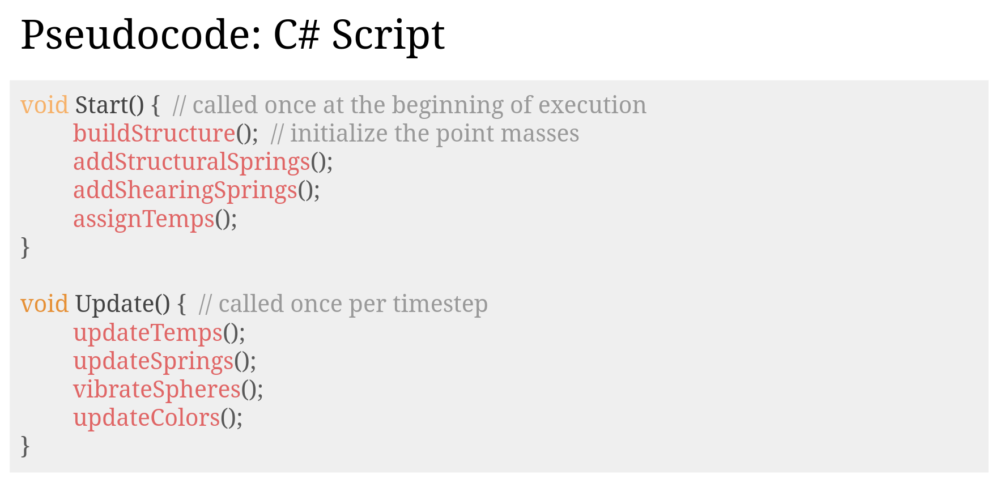
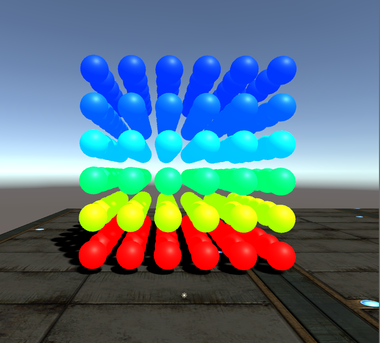

Final Project: Real Time Melting Simulation Using Springs
Michael Ren & Mathew Han, CS184-su20
Abstract
The goal of this project was to create a real time melting simulation in Unity by using spring joints and point masses. The rationale behind our implementation relates to how intermolecular forces act between particles at an atomic level. The spring constant represents the strength of intermolecular forces between particles, and the lattice structure of our cube is similar to the metalic bonds within metals. We can simulate this at a macro level using spring joints and larger point masses.
Technical Approach
Overall pipeline
|

|
Constructing the cube
The cube was created by attaching a script to an empty GameObject that generated a 3D matrix of sphere masses. Each of these sphere masses were given their own Rigidbody and connected to its (up to 26) neighbors using a one-way spring joint. Unlike Project 4 (ClothSim), we wanted to simulate a metal rather than a weightless cloth, so we used a high spring constant to make the cube appear solid and a higher mass per particle.

|
One of the biggest issues that we came across while implementing the structure was that the masses were too far apart from each other initially. If we applied too much external force, the box would explode and particles would fly everywhere on the screen. We fixed this by increasing the mass of each particle so that it would take more force to move a spring, as well as decreasing the average distance between each particle.

|

|
Some other more trivial issues that arose with our implementation came with how we designed the cube. Initially, we were only going to use structural spring joints, but the cube would simply fall apart. We later added in planar and 3D shearing to address this problem. In addition, Unity has only one way spring joints by default, so we had to apply spring joints for each point mass in one direction, unlike ClothSim where it was done in pairs.
Simulating heat propagation

|

|

|
One of the largest problems we encountered was how we wanted to simulate the heat propagation itself. Initially, we tried energy based radiation using the Stefan-Boltzmann Law, but we ran into issues with conservation of energy. As the simulation continued running, the temperatures would increase exponentially until they became NaN. Since we didn't want to go through the hassle of keeping track of the energy from heat loss and the energy from heat transfer, we went with the heat equation approach.
Applying melting
To implement the melting effect, we used an empirically derived curve from Thermal Degradation of Extension Springs. Since the paper didn't provide an explicit formula for their regression, we approximated it using a cubic spline. The formula would be applied to springs constants of the outgoing spring joints of each particle mass, causing hotter particles to have weaker springs over time. The cube itself would become less structurally stable because of the shift in spring forces, causing the melting effect that we wanted to simulate.

|
However, the formula only mapped temperature directly to the spring constant of the Elgiloy spring. We transformed the constant into a ratio that could be applied directly onto any spring constant (we assume all of our springs have similar spring constant curve to the Elgiloy spring).
Also, despite lowering the spring constant, the cube itself would be entirely at rest by the time it was heated enough for the formula to have an impact. As a result, we had to apply microforces to each particle (vibrations) in order for the structure to actually melt. Below are some of our simulations of the melting itself without colors for heat propagation.

|
|

|

|
Results
Contributions
Mathew
Mathew worked on researching different methods of implementing heat propagation, specifically conduction and radiation. He also coded up the spring update algorithm, parts of the construction of the point mass cube itself, and contributed to the reports, video, and final presentation.
Michael
OMEGALUL pepega monkaW
Conclusion
Something something i liked the class epic project learned lots love bobcao3 and john xiang dinosaur profile pic lol